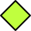
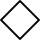
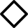
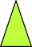

4 The Search Tree
Node | Kind | Color | BW | ||
|---|---|---|---|---|---|
choice | open |
| light blue |
| thin border |
choice | closed |
| blue |
| thick border |
solved | suspended |  | light green |  | thin border |
solved | entailed | green |  | thick border | |
failed |
|
| red |
| thin border |
suspended |
|
| orange |
| thin border |


Figure 4.1: Nodes in the search tree.
Figure 4.1 sketches how the different nodes are drawn by the Explorer.
Choice nodes
Choice nodes are drawn as circles. A choice node is closed, if all of its direct descendants are explored, otherwise it is open.
Solved nodes
Solved nodes are drawn as diamonds. The Explorer distinguishes between nodes corresponding to entailed (i.e., spaces where no actors and propagators are left) or suspended (i.e., spaces where actors or propagators are left) computation spaces.
Failed nodes
Failed nodes are drawn as rectangular boxes.
Suspended nodes
Suspended nodes are drawn as stars. If the search tree contains a suspended node, it cannot be further explored. If the corresponding computation space becomes stable, the node will change to a node corresponding to the now stable space.
Explored | Solutions | Color | |
|---|---|---|---|
partially | yes |  | light green |
partially | no |
| purple |
fully | yes |
| green |
fully | no |
| red |


Figure 4.2: Hidden subtrees in the search tree.
Hidden subtrees
Besides of nodes, the search tree may also contain hidden subtrees. Hidden subtrees are drawn as triangles, see Figure 4.2. More on hiding subtrees can be found in Section 6.5.
| Selecting nodes |  |
Choice nodes, solved nodes, and hidden subtrees can be selected by clicking on them with the left mouse button. The selected node is drawn shadowed (See also Chapter 3).
Numbered nodes
Invoking an action on a node marks the node with a number. For invoking actions see Section 6.4.